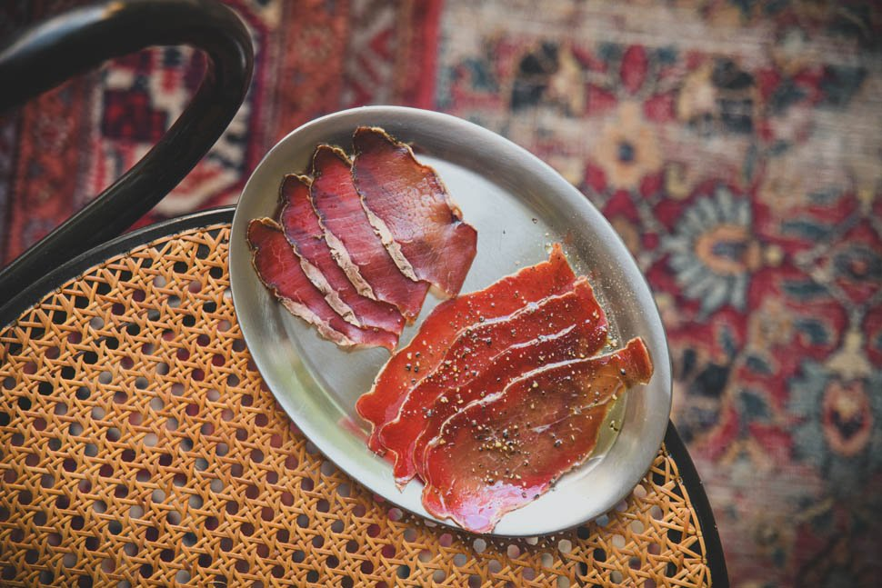
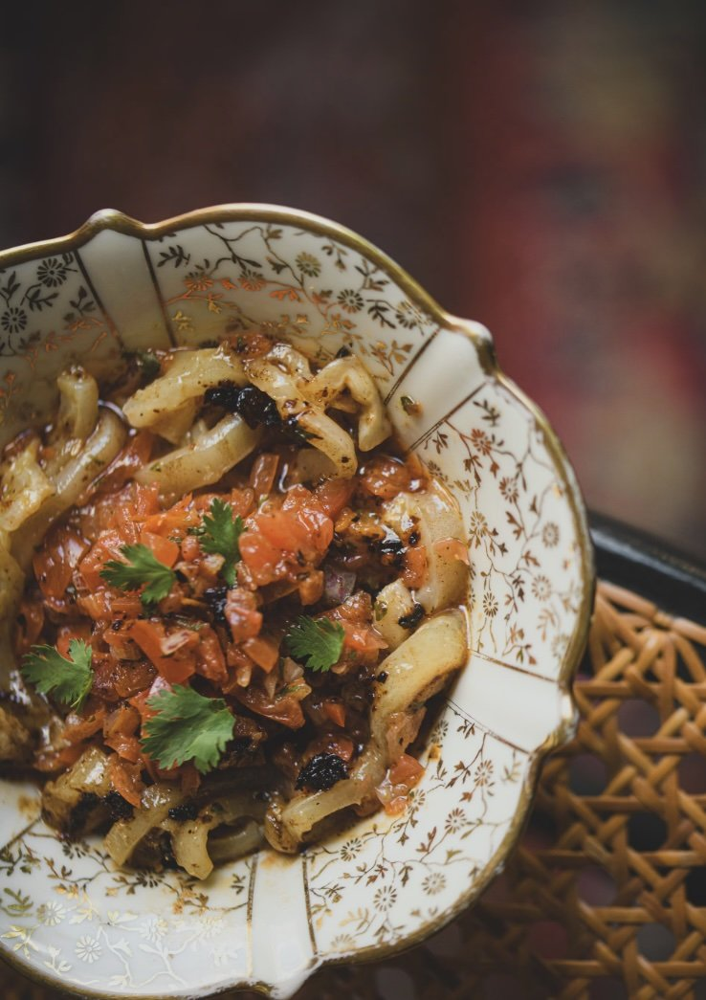
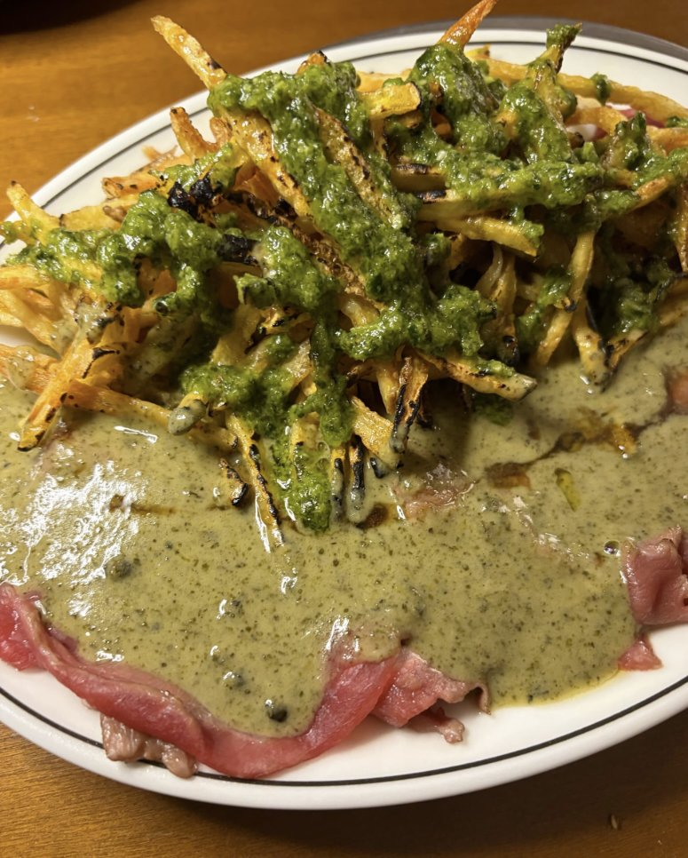
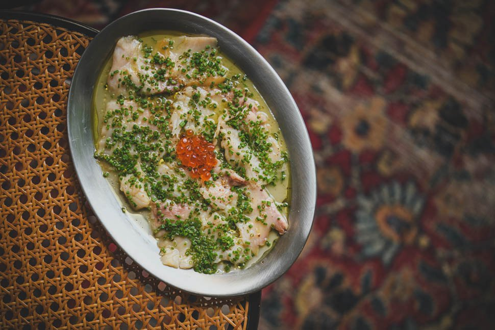
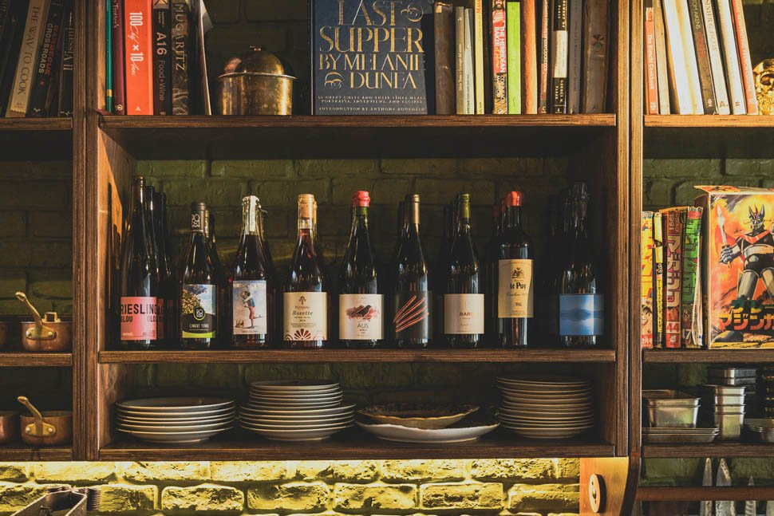
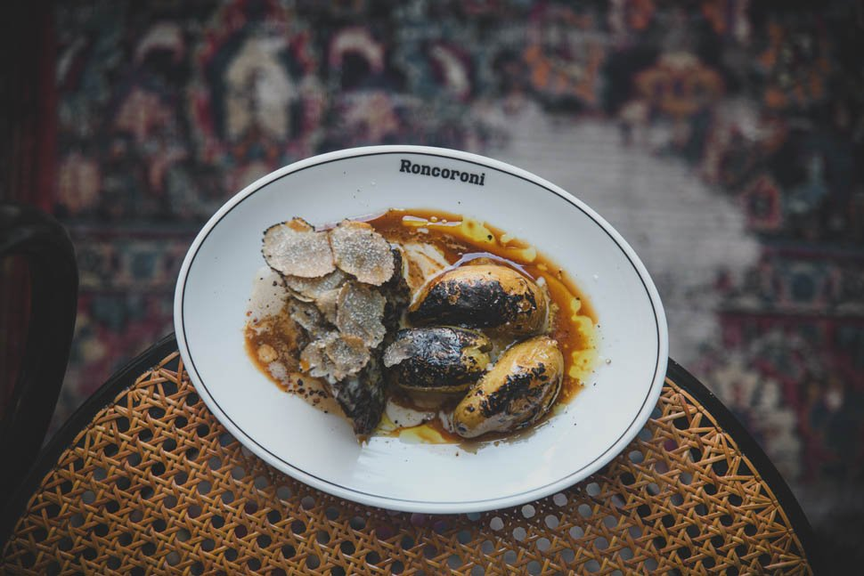

Gastronomia · La lista
Roncoroni Classici Gastronomici
Un piccolo bistrot molto personale che cucina classici italiani e francesi, con la salsa al centro di ogni piatto.
- Porta Ticinese
- €€€€€
- Solo a cena
- Meglio prenotare






Perché ci vado
Roncoroni è un piccolo bistrot proprio accanto alle Colonne di San Lorenzo: un bancone e un paio di tavoli condivisi all'interno, una quindicina di coperti, più qualche posto in veranda.
Sembra più la casa di qualcuno che un ristorante, con tavoli di famiglia spaiati, vecchie tazzine da caffè, scaffali di libri di cucina, manga e vecchie riviste gastronomiche, ritratti di chef alle pareti e un'insegna dorata dipinta a mano.
Non aspettarti i soliti piatti milanesi: qui i 'classici' sono i grandi classici gastronomici italiani e francesi, come pâté en croûte, foie gras, salumi, selvaggina e frattaglie, con le salse al centro di tutto. Il menu cambia in base a ciò che arriva, e te lo raccontano al tavolo.
Cosa ordinare
-
i.
Pâté en croûteIl classico francese: una ricca terrina di carne cotta in crosta di pasta. Ottimo da dividere mentre scegli il resto.
-
ii.
Acciughe in salsa rossa o verdeAcciughe sotto una salsa rossa fatta in casa o una salsa verde decisa, con buon pane e burro di montagna per fare la scarpetta.
-
iii.
Quinto quarto del giornoIl piatto di frattaglie del giorno, sempre con una salsa fatta sul serio. Cambia di continuo, quindi chiedi cosa c'è.
Da sapere
- Solo a cena, da martedì a sabato dalle 18:30. Chiuso domenica e lunedì.
- Il menu cambia con i prodotti, quindi è un po' diverso ogni volta che ci vai.
- Le app di mappe indicano l'indirizzo dell'edificio, ma l'ingresso è di fronte alle Colonne di San Lorenzo.